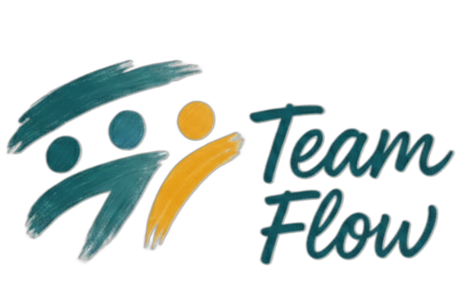

Zarządzaj projektami i zespołem. Usprawnij swój dzień pracy.

TeamFlow to zaawansowana platforma, która z natury łączy prostotę narzędzia do zapisywania bieżących spraw z potęgą i głębią niezbędną do prowadzenia największych, najbardziej złożonych przedsięwzięć zespołowych. Osiągnij pełną widoczność i kontrolę, niezależnie od skali wyzwania.